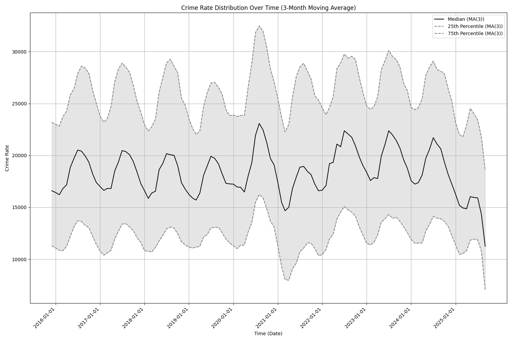

Evidence from U.S. Media Bias and Presidential Interventions
Xingyuan Zhao
2025-11-20
Research Question
How does political leaders’ messaging generate biased narratives to enable democratic backsliding?
Trump calling out Democratic cities for high crime
Gaps between actual crime data and the narratives

Literature Review
Media Bias:
Strong consensus on bias in “hard news” and politicized issues (Niven 1999; Niven 2001)
Older research: less severe in “soft news” and objective topics (Niven 1999; Niven 2001)
Partisan consumption patterns persist across all news types (Iyengar and Hahn 2009)
Elites now directly contest objective data via social media (The White House 2025)
Democratic Backsliding & Performance:
Better performance \(\rightarrow\) more stable regimes (Carothers and Hartnett 2024)
BUT: limited evidence that poor actual performance \(\rightarrow\) democratic backsliding (Carothers and Hartnett 2024)
Mixed cases: Brazil (Hunter and Power 2019), El Salvador (Economist 2019) vs. India (Sridharan 2014), Mexico (Sánchez-Talanquer and Greene 2021), Poland, Turkey (Carothers and Hartnett 2024)
Voters embrace disruptive change promises (Carothers and Hartnett 2024)
Main Argument
Political leaders social media posts -> biased media coverage -> perceived performance -> support for drastic changes -> democratic backsliding
Contributions:
Mechanism: elite rhetoric actively shapes information environments
Data Sources
Crime Data: - FBI Crime Data Explorer (actual crime rates across U.S. cities/states)
Population Data: - Federal Reserve Economic Data (state-level population for rate calculations)
Media Coverage: - The News APIs (systematic collection, partisan comparison)
Presidential Communications: - Truth Social posts (intervention timing)
Data Generation
News Reports Processing:
Scraped news reports from CNN and Fox News APIs.
Used LLM (llama3.1:8b-instruct-q4_K_M) to classify filter,and annotate the news reports, created a regional crimenews reports dataset.
Architecture Design:
flowchart TB
A1[News Source 1]
A2[News Source 2]
A3[News Source 3]
A4[...]
A5[News Source N]
B[Aggregate Raw Reports]
C[Full News Report Dataset<br/>2021-2025]
subgraph D["LLM Pipeline"]
direction LR
E1[Model 1: Relevance Classification]
E2[Model 2: Location Annotation]
E1 --> E2
end
F[Post-Processing]
G[Regional Crime News Dataset<br/>with State-Level Annotations]
A1 & A2 & A3 & A4 & A5 --> B
B --> C
C --> D
D --> F
F --> G
style D fill:#e1f5ff
style G fill:#e8f5e9
Prompts Example:
Model 1 - Relevance Classification:
response_relevance = ollama.chat( model=model_name, messages=[{'role': 'user','content': f'Is this text about crime in a US location? Respond in JSON format: {{"relevance": true}} or {{"relevance": false}} Text: {text}' }],format='json')
Model 2 - Location Annotation:
response_location = ollama.chat( model=model_name, messages=[{'role': 'user','content': f'Identify the exact US STATE mentioned in this text. If no state is mentioned, respond with "None". If the region is subnational, respond with the two digit state code. Respond in JSON format: {{"location": "two digit state code"}} Text: {text}' }],format='json')
Outcome Model (Improved Estimator):\[
m(0,t,X) = \mathbb{E}[\Delta Y_{it} | D=0, X_i] = \alpha_0 + \beta X
\] where \(\Delta Y_{it} = Y_{it} - Y_{i,t-1}\) (change in outcome from pre to post)
Variables:
Outcome (\(Y\)): News frequency (monthly article count)
Treatment (\(G\)): Indicator for DC (treated 2025/08) or IL (treated 2025/09)
Time periods: 2 periods, pre-treatment and post-treatment
Covariates (\(X\)): Crime rate (in covariate-adjusted model)
where \(ATT(g,t)\) = average treatment effect for group first treated at time \(g\) in period \(t\), \(e\) = event time, \(C\) = never-treated control group, \(P(G=g)\) = proportion of units in treatment group \(g\)
Variables:
Outcome (\(Y\)): Valid News frequency at region-time (monthly article count)
Treatment groups (\(g\)): \(g=202508\) (DC), \(g=202509\) (IL)
Control group (\(C\)): Never-treated states (49 states)
Time periods (\(t\)): 2025/01-2025/10
Covariates (\(X\)): Crime rate per 100,000 population (in covariate-adjusted model)
ATT(g,t) Estimation method: drdid
Aggregation: Dynamic event study (\(e \in [-12, 10]\))
Results
Robustness Check
Conclusion
Presidential rhetoric significantly increased regional crime news coverage from aligned partisan media outlets:
DC (2025/08) and IL (2025/09) experienced 100+ additional monthly articles post-intervention
HonestDiD sensitivity analysis confirms results remain robust to violations of parallel trends assumption up to twice the baseline magnitude.
Limitations
Data collection is limited to CNN and Fox News, and the news reports are not comprehensive.
The CNN news are not completely collected, due to the limited funding available.
Treated states are too few, only 2 states, DC and IL, making csdid results less reliable.
Future Research
Collect more news reports from more media outlets, and more states.
Use more LLM pipelines to classify the support for the president’s rhetoric
Use fine-tuned models to get the bias level of the news reports.
add pre treatment parallel trends assumption test. (event study)
investigage reverse causality: media bias -> political leaders’ messaging
democratic backsliding -> media bias and political leaders’ messaging